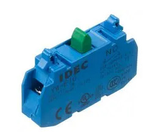

Programirljivi logični krmilniki (VS-PAP-2)
PLKP
Vaja 1: Realizacija osnovnih logičnih funkcij
This page is part of the content downloaded from Vaja 1: Realizacija osnovnih logičnih funkcij on Monday, 23 February 2026, 2:12 PM. Note that some content and any files larger than 100 MB are not downloaded.
Description
Opis
V okviru laboratorijske vaje je potrebno zgraditi sistem z uporabo električnih komponent, ki bo omogočal izgradnjo različnih logičnih vezij. Uporabili bomo tipke, kontakte, terminale, žice, sponke in svetila.
Potek vaje
- Načrtovanje električne sheme sistema (stikalni načrt)
- povezave med električnimi komponentami
- Električna vezava sistema
- Testiranje pravilnosti delovanja
Seznam materiala in opreme
| Komponenta | Koda | Proizvajalec | Podatkovni list | Slika |
|---|---|---|---|---|
| tipka | YW1B-M1E10W | IDEC | datoteka |  |
| kontakt | YW-E10 | IDEC | datoteka |  |
| svetilo | 19211353 | CML INNOVATIVE TECHNOLOGIES | datoteka |  |
| sponke | / | Wago | datoteka |  |
| rele | RT424024 | Shrack | datoteka |  |
| rele podnožje | RT78726 | Shrack | datoteka |  |
Gradiva:
Cilji:
Cilje laboratorijske vaje doseegate po vrsti od cilja za oceno 6 do cilja za oceno 10. Vsak dosežen cilj mora nujno preveriti asistent in vam s tem odobri nadaljevanje na naslednji cilj
- Ocena 6:
Električno zvežite sistem, ki bo prikazoval delovanje dvovhodne AND in OR logični funkciji.- uporabite 2 tipki
- ustrezno število kontaktov
- 1 svetilo na funkcijo
- Ocena 7:
Električno zvežite sistem, ki bo prikazoval delovanje dvovhodne NAND in NOR logični funkciji.- uporabite 2 tipki
- ustrezno število kontaktov
- 1 svetilo na funkcijo
- Ocena 8:
Električno zvežite sistem, ki bo prikazoval delovanje dvovhodne XOR in XNOR logični funkciji.- uporabite 2 tipki
- ustrezno število kontaktov
- 1 svetilo na funkcijo
- Ocena 9:
Električno zvežite sistem, ki bo prikazoval delovanje logične funkcije:- $$ F(A,B,C)=(A \cap \overline{B}) \oplus (A \cup ( C \cap B))$$
- uporabite 3 tipke
- ustrezno število kontaktov
- 1 svetilo na funkcijo
- pomagajte si z logično tabelo
- zvezati je potrebno PDNO obliko
- $$ F(A,B,C)=(A \cap \overline{B}) \oplus (A \cup ( C \cap B))$$
- Ocena 10:
Realizirajte MDNO funkcije iz naloge za oceno 9.- Svetilo zvežite preko releja pri čemer negirate MDNO funkcijo
(a and (not b)) xor (a or (c and b))